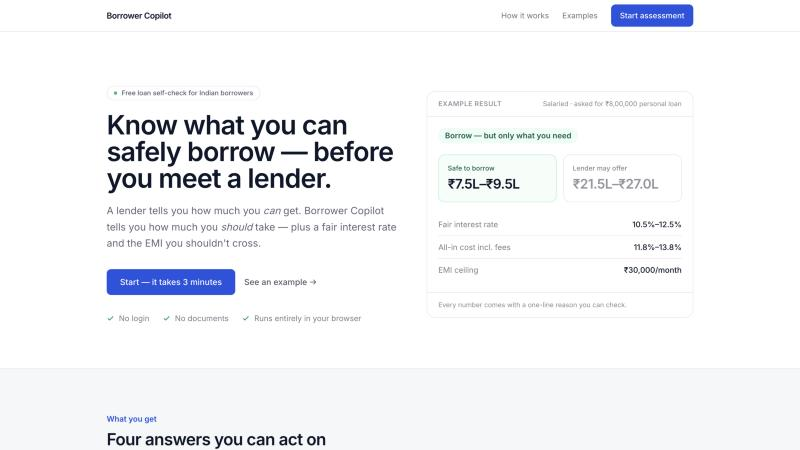
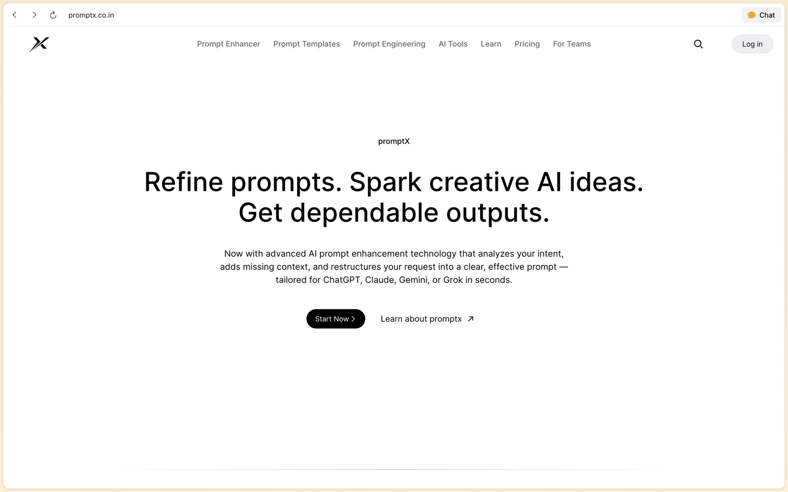
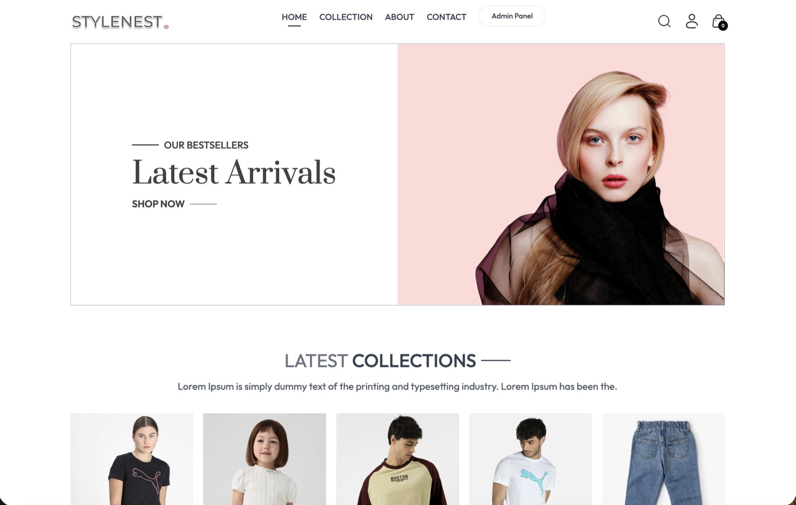

An AI news agent that routes between hybrid metadata and vector search and a live web fallback, with 4-way LLM failover and an async cron pipeline for ingestion, summaries and TTS.
AsliOffer
AsliOffer
An AI agent that checks job offers for Indian freshers against live SerpApi search data, with company, recruiter, salary and scam agents, returning a cited VERIFIED / NEEDS_REVIEW / HIGH_RISK verdict. Built for the SerpApi India Hackathon 2026.
Borrower Copilot

Borrower Copilot
A loan self-assessment tool for Indian borrowers: ~9 adaptive questions give a borrow / borrow less / don't borrow verdict, a safe amount vs. likely sanction, a fair rate band with all-in APR, and an EMI stress test. Deterministic rules engine, 78 passing tests.
PromptX

PromptX
A production-ready AI prompt platform with a RAG assistant, BullMQ/Redis job queues, JWT + Google OAuth, and an indexed history API that cut documents examined per query by ~99.9%.
StyleNest

StyleNest
A full-stack e-commerce platform with cart, checkout and admin workflows. Razorpay payments, Cloudinary storage, RBAC and Redis caching took API responses from 3s to 7ms.